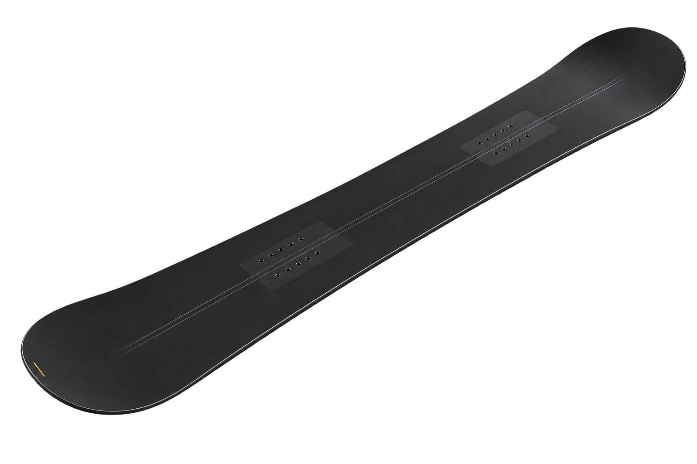
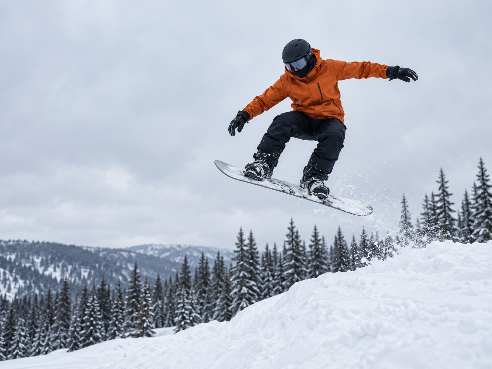

Nordkette
NE-facing · 14% sun
NESW
Powder · wind 18 kph NE46 cm fresh
Best run
1.4 min63%Vertical goal
Top speed
61 km/h57%Days on snow
My
Board
Board

Carve Custom156 cm · 52 cm stance
156 cm · current
Carve Custom
Camber profile · flex 6/10 · waist 25.2 cm
Length156 cm
Stance52 cm
Front angle+18 °
Rear angle−6 °
